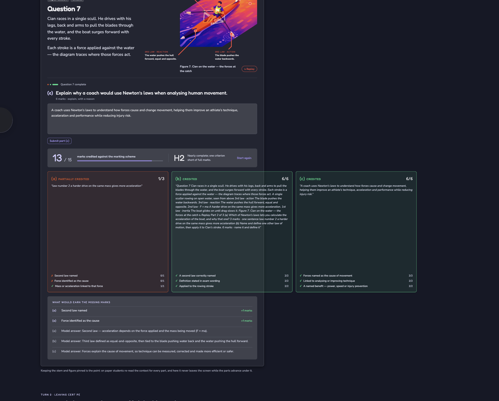

Rounded display type over a rounded reading face, on Nocturne's ground. The image carries the physics; the force arrows are the answer, so they stay hidden until the student has written theirs. See 2a.
Three boxes instead of one blank page: students lose marks on “explain” questions by describing the movement and never naming the force pair. Each box is one marking-scheme line, so a half-written answer still shows where the gap is.
Three question archetypes, all working. The animation is never decoration — it is the answer, held back until the student commits. Compare 1a, 1b and 1c.
The diagram loops before the answer too — plates and magma keep moving — but the label only lands once they commit. Wrong picks tick red and stay visible, so the misconception is on screen next to the correction.
Sequence beats multiple choice for processes: the student has to hold the causal chain, not recognise a phrase. Get it right and the diagram labels the two features the marking scheme rewards.
Explain the formation of one feature of river erosion you have studied. Refer to a named example.
Try typing: Hard rock lies over softer rock. Hydraulic action undercuts the soft layer until the overhang collapses; the plunge pool deepens and the waterfall retreats upstream, leaving a gorge — for example Torc Waterfall, Co. Kerry.
